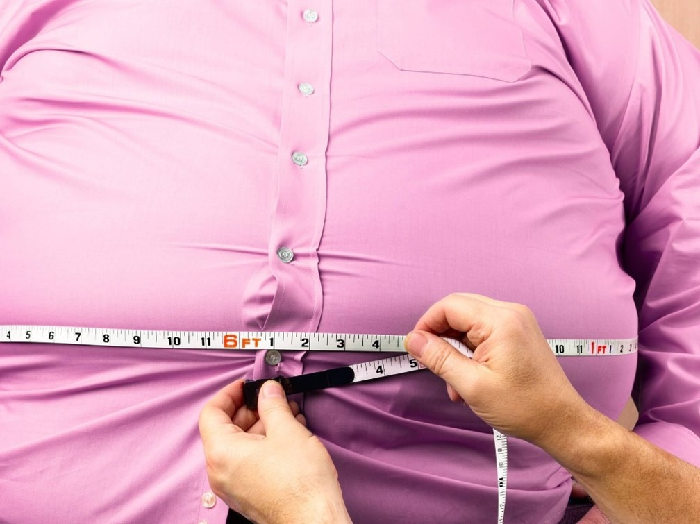
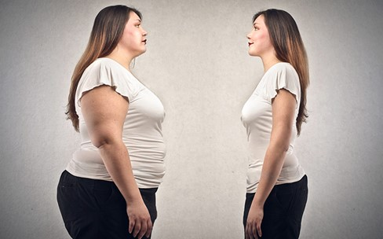
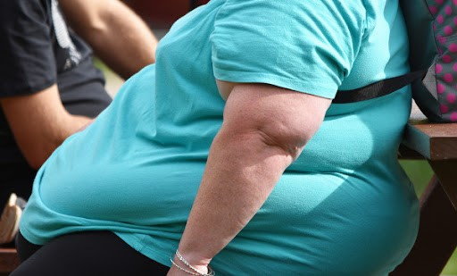
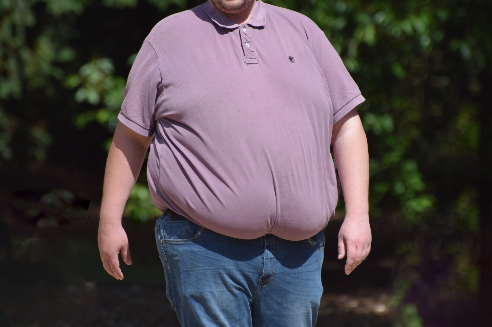
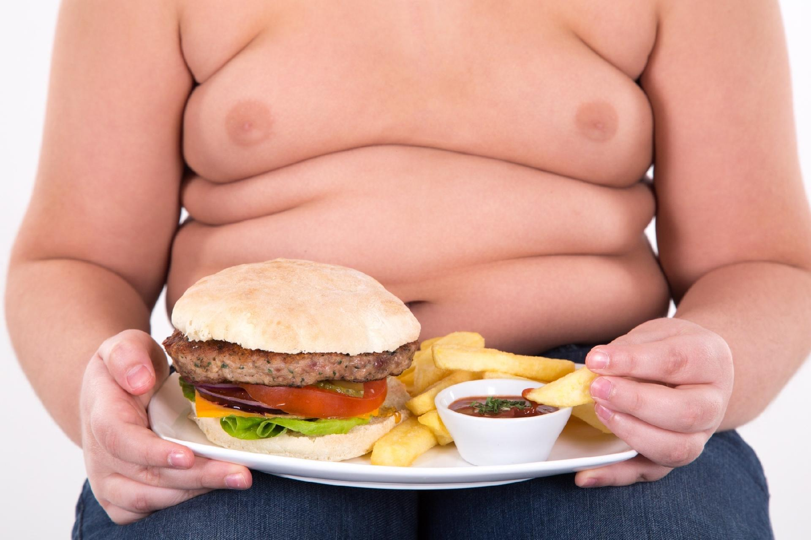
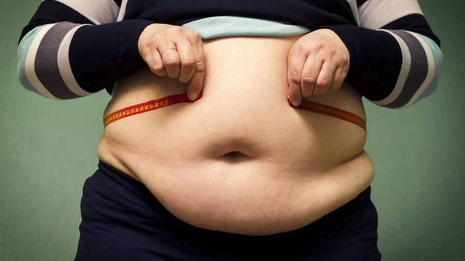

O que é Obesidade?
A obesidade é uma condição médica causada pelo acúmulo de gordura localizada em diferentes partes do corpo humano.
Existem diferentes causas para a obesidade, sendo que a principal delas é o consumo exagerado de calorias proveniente de alimentos. De forma geral, o acúmulo de gordura acontece quando há um desequilíbrio entre a energia que é inserida no corpo por meio das refeições e a energia que é gasta pelo corpo nas atividades do dia a dia.
Para determinar se uma pessoa está obesa ou não, é feito o cálculo do Índice de Massa Corpórea, que divide o peso do paciente por sua altura elevada ao quadrado. O valor obtido é inserido em uma tabela que possui valores para abaixo do peso normal, dentro do peso normal, acima do peso, obesidade grau I, obesidade grau II e obesidade grau III.
De acordo com dados do Ministério da Saúde, a obesidade no Brasil já atinge a cerca de 18,9 % da população.
A obesidade infantil também é determinada pelo IMC (com valores de referência que são diferentes dos adultos), sendo que essa condição precisa ser observada com atenção médica, já que pode trazer consequências para a vida adulta.
Quais são os tipos de obesidade?
Existem diferentes tipos de obesidade, sendo que a obesidade de grau I é considerada obesidade leve; a obesidade de grau II é a obesidade moderada e a obesidade de grau III, é a obesidade mórbida.
Outros tipos de obesidade incluem a primária, que acontece quando a causa é o consumo excessivo de calorias, e a secundária, quando o sobrepeso é causado por conta de alguma doença ou condição médica.
Os tipos de obesidade também se referem à forma onde o acúmulo de gordura se localiza dentro do corpo do indivíduo. Na obesidade homogênea, o paciente apresenta uma certa proporção entre a quantidade de gordura nos membros inferiores e nos membros superiores.
A obesidade androide se mostra como um acúmulo excessivo de gordura na parte abdominal e no tórax, mais comum em pacientes do sexo masculino. Já a obesidade ginecoide é mais comum para pacientes mulheres, e se mostra como um acúmulo maior de gordura nos quadris, coxas e pernas, ou seja, na parte inferior do corpo.
Quais são as causas da obesidade?
Além do consumo excessivo de calorias, a obesidade também pode ser causada por outros fatores, como doenças diversas. São condições como os desequilíbrios hormonais, que devem ser observados por um médico endocrinologista. A obesidade também pode ter causas psicológicas e emocionais, como as compulsões alimentares. Outra causa possível para a obesidade é o fator genético, que pode fazer com que o indivíduo tenha um metabolismo mais lento, com maior facilidade para ganhar peso.
Quais são as consequências da obesidade?
O paciente com obesidade pode apresentar problemas e complicações diversas. Quem é obeso pode apresentar diabetes, pressão alta, apneia do sono, aterosclerose, trombose, varizes, distúrbios no ciclo menstrual (nos pacientes do sexo feminino), além de problemas cardiovasculares diversos.

Orientação de Tratamento
O tratamento da obesidade pode ser feito com uma dieta, com a prática regular de exercícios físicos ou com o uso de remédios indicados pelo médico para ajudar a reduzir o apetite e a compulsão alimentar. Em alguns casos, a cirurgia bariátrica também pode ser indicada, pois diminui a absorção dos alimentos pelo trato gastrointestinal, promovendo a perda de peso.
O principal objetivo desses tratamentos é atingir e manter o peso saudável, evitando o desenvolvimento de complicações como diabetes, pressão alta, colesterol alto, refluxo gastroesofágico, osteoartrite, impotência ou infertilidade, por exemplo.
O tratamento da obesidade deve ser feito por uma equipe multidisciplinar contendo endocrinologista, nutricionista, cirurgião bariátrico e educador físico. Além disso, é importante também fazer acompanhamento com um psicólogo para identificar comportamentos que podem causar compulsão alimentar ou para ajudar a não desistir do tratamento.
Qual médico consultar?
O médico mais indicado para avaliar cada caso e orientar o melhor tratamento para a obesidade é o endocrinologista. No entanto, é comum que seja necessária uma equipe multidisciplinar, que conte também com nutricionista, educador físico e, em alguns casos, cirurgião bariátrico.
Principais tratamentos para obesidade
Mudanças na dieta
O primeiro passo, tanto para tratar como para prevenir a obesidade, é fazer mudanças na dieta incluindo uma alimentação balanceada e rica em frutas, legumes, verduras, fibras e água, conforme orientação do médico e do nutricionista.
Essas mudanças na dieta permitem controlar o consumo de calorias ingeridas durante o dia, que deve ser menor do que o que se gasta para manter o metabolismo do corpo, sendo calculada de acordo com a alimentação habitual, a quantidade de peso que é necessária perder, além da idade, sexo, altura e peso atual.
A perda de peso constante a longo prazo é considerada a maneira mais segura de perder peso e manter o peso alcançado permanentemente, já que, pois, mudanças drásticas como dietas radicais, podem gerar resultados rápidos, mas provavelmente, recupera-se o peso mais rápido também.
Praticar atividades físicas
A prática de atividades físicas, como caminhada ou natação, por exemplo, é outra parte essencial do tratamento da obesidade, pois ajuda a aumentar o metabolismo do corpo, favorecendo o gasto de energia e a queima de calorias, facilitando a perda de peso.
Para perder peso é recomendado fazer de 150 a 300 minutos de atividades físicas por semana, sendo fundamental fazer uma avaliação médica antes de iniciar os exercícios para avaliar o estado de saúde, além de ter a orientação de um educador físico para evitar lesões, por exemplo.
Além disso, pequenas mudanças nos hábitos de vida como reduzir o uso do carro ou substituir o elevador pelas escadas, por exemplo, também ajudam no maior gasto de calorias e na perda de peso.
Remédios para obesidade
O uso de remédios para tratar a obesidade é indicados pelo médico quando a pessoa tem IMC superior a 30kg/m2, IMC maior que 27kg/m2 e que tenham outras doenças relacionadas, como diabetes, colesterol elevado e pressão alta, e também nos casos de pessoas com qualquer tipo de obesidade que não conseguem emagrecer com dieta e exercícios.
Os principais remédios indicados para o tratamento da obesidade são:
• Inibidores do apetite, como sibutramina, anfepramona ou femproporex, pois agem diretamente no centro da saciedade no cérebro, diminuindo o apetite, o que reduz o consumo de calorias ao longo do dia e ajuda no emagrecimento;
• Redutores da absorção de gorduras, como o orlistate, que agem inibindo algumas enzimas no intestino, o que bloqueia a absorção de parte da gordura dos alimentos, diminuindo a quantidade de calorias ingeridas por dia;
• Antagonista do receptor CB-1, como rimonabanto, que age diretamente no cérebro inibindo o apetite, aumentando a saciedade e diminuindo a compulsão alimentar;
• Termogênicos, como efedrina, que agem acelerando o metabolismo fazendo com que o corpo gaste a gordura acumulada como principal fonte de energia.
Além disso, também existem medicamentos usados no tratamento de outras doenças que podem ajudar a combater a obesidade, como os antidepressivos, e alguns exemplos são a fluoxetina, sertralina ou bupropiona.
Os remédios para tratamento da obesidade só devem ser utilizados com orientação médica, pois requerem atenção e acompanhamento regular, devido ao risco de efeitos colaterais, como aumento dos batimentos cardíacos, aumento da pressão arterial, dor de cabeça, diarreia, alteração de humor, irritabilidade, ansiedade ou insônia, por exemplo.
Cirurgia bariátrica
A cirurgia bariátrica é indicada pelo médico nos casos de obesidade mórbida, com IMC superior a 40kg/m2, ou obesidade moderada, com IMC superior a 35mg/m2, em pessoas que tenham doenças causadas pela obesidade como diabetes, apneia do sono, pressão alta, colesterol alto, doenças cardiovasculares, AVC, arritmias ou osteoartrites.
Os principais tipos de cirurgia bariátrica são:
• Banda gástrica: é colocada uma faixa ajustável em volta do estômago, diminuindo seu tamanho e contribuindo para que a pessoa coma menos;
• Bypass gástrico: é feita uma redução do tamanho do estômago e alteração do intestino, que é ligado diretamente ao pequeno estômago, o que diminui a capacidade da pessoa se alimentar de grandes refeições, levando ao emagrecimento;
• Derivação biliopancreática: é feita através da remoção de uma grande parte do estômago e uma ligação do estômago com a parte final do intestino delgado;
• Sleeve gástrico: é feita a remoção da parte esquerda do estômago, o que faz com que exista uma diminuição da capacidade do estômago para armazenar comida.
O tipo de cirurgia indicada para cada pessoa é decidido pelo paciente em conjunto com o cirurgião gástrico, que avalia as necessidades de cada pessoa e o procedimento que pode melhor se adequar.
Dicas para não desistir do tratamento
O tratamento para obesidade não é fácil de cumprir porque implica a alteração de hábitos alimentares e de estilos de vida que o paciente fez por toda a vida, então, algumas dicas para ajudar a não desistir do tratamento podem ser:
• Estabelecer objetivos semanais que sejam possíveis de atingir;
• Pedir ao nutricionista para ajustar a dieta se estiver muito difícil de cumprir;
• Escolher um exercício físico que goste mais, e praticar de forma regular;
• Registrar os resultados, anotando medidas em um papel ou com fotografias semanais.
É importante lembrar que existem programas para emagrecimento gratuitos, que são realizados por hospitais universitários com serviço de endocrinologia, sendo possível se informar sobre encaminhamentos e consultas no posto de saúde.

Principais Características
Quais são as características da obesidade?
A principal característica da obesidade é o acúmulo de gordura corporal, seja no abdômen, nas coxas ou de forma homogênea. No entanto, devido aos fatores comportamentais contribuírem para o surgimento da condição, outras doenças crônicas, associadas a um estilo de vida pouco saudável, podem ser desencadeadas.
Esse é o caso do diabetes tipo 2, do colesterol alto e da hipertensão arterial. Não necessariamente uma pessoa com obesidade apresenta essas doenças, porém, tem mais predisposição a desenvolvê-la por conta dos hábitos.
Quais as maiores consequências da obesidade?
O aumento excessivo do peso e da gordura corporal também pode proporcionar ao indivíduo algumas consequências negativas. Desse modo, é possível observar alguns sinais desconfortáveis que surgem ao longo do desenvolvimento da obesidade.
Dores no corpo
O aumento do peso faz com que a pressão exercida em algumas regiões do corpo ao se movimentar seja maior, como nos joelhos e nas costas. Por conta disso, pacientes com obesidade costumam relatar dores, em especial nessas áreas.
Vale ressaltar que pessoas com obesidade e que também são sedentárias podem apresentar uma maior tendência às dores no corpo por conta da falta de atividade e exercícios físicos.
Manchas na pele
O aumento das dobras na pele, que podem passar despercebidas na hora de se secar após o banho ou acumular suor, aumenta a suscetibilidade da ação de fungos, devido à umidade.
Isso favorece o desenvolvimento de infecções na pele, como a dermatite, que pode contribuir para o aparecimento de manchas, principalmente em regiões como axilas, virilha e pescoço.
Falta de ar
A pressão do abdômen sobre o pulmão pode fazer com que o sistema circulatório sofra algumas alterações no funcionamento, causando falta de ar, principalmente em momentos em que a demanda de oxigênio é maior, como após se movimentar ou passar por situações de estresse.
Dificuldade de se mover
A obesidade traz como uma das consequências uma maior limitação ao movimento. Além de esse fator também contribuir para o surgimento de problemas de pele, há complicações físicas.
A diminuição do movimento do corpo causa uma maior sobrecarga na coluna e nos membros inferiores, assim como compromete o condicionamento físico, dificultando a realização de atividades físicas diárias, como caminhar.
As articulações da região do quadril, joelhos e tornozelos também podem ser prejudicadas, aumentando as chances de desenvolver artrose, principalmente nessas áreas mais afetadas.
Dicas de Cuidados
Dieta Balanceada: Incentive uma alimentação equilibrada, rica em frutas, vegetais, grãos integrais e proteínas magras. Evite alimentos processados, ricos em gorduras saturadas e açúcares adicionados.
Controle das Porções: Ensine a importância de controlar o tamanho das porções. Muitas vezes, as pessoas consomem mais calorias do que necessitam simplesmente por porções exageradas.
Atividade Física Regular: Encoraje a prática regular de exercícios físicos, adaptados à idade e capacidade física de cada pessoa. Isso pode incluir caminhadas, natação, ciclismo, entre outros.
Redução do Tempo Sedentário: Limite o tempo gasto em atividades sedentárias, como assistir televisão ou usar dispositivos eletrônicos. Estimule atividades que envolvam movimento.
Hidratação Adequada: Certifique-se de que estão bebendo água suficiente ao longo do dia. Evite bebidas açucaradas e com alto teor calórico.
Controle do Estresse: Ajude na gestão do estresse, pois o estresse crônico pode contribuir para hábitos alimentares não saudáveis e ganho de peso.
Sono Adequado: Incentive uma boa higiene do sono, garantindo que estejam dormindo o suficiente todas as noites. A privação do sono pode afetar os hormônios que regulam o apetite e o metabolismo.
Apoio Psicológico: Reconheça que a obesidade muitas vezes está ligada a questões emocionais. Ofereça suporte emocional e, se necessário, encaminhe para um profissional de saúde mental.
Monitoramento Regular: Realize acompanhamento médico regular para monitorar o peso, pressão arterial, glicemia, perfil lipídico e outros parâmetros de saúde relevantes.
Educação Contínua: Forneça educação contínua sobre os riscos associados à obesidade e os benefícios de um estilo de vida saudável, incentivando mudanças progressivas e realistas.
É importante abordar a obesidade como um desafio de saúde pública e adotar uma abordagem compassiva e empática para ajudar as pessoas a alcançarem e manterem um peso saudável ao longo da vida.

Exercícios/Brincadeiras
Crianças:
Brincadeiras ao Ar Livre: Incentive atividades ao ar livre, como pular corda, jogar bola, andar de bicicleta ou patins.
Dança: Organize sessões de dança em casa ou em grupos, o que pode ser divertido e excelente para queimar calorias.
Jogos Ativos: Explore jogos ativos como "simão-sentado", "pique-esconde", ou qualquer outro que envolva movimento e diversão.
Adolescentes:
Esportes em Grupo: Encoraje a participação em esportes em equipe, como futebol, basquete, vôlei, ou mesmo em clubes de corrida.
Treinamento de Força: Introduza exercícios de resistência, como levantamento de pesos leves, uso de faixas elásticas ou exercícios de peso corporal.
Aulas de Fitness: Explore aulas de fitness adaptadas para adolescentes, como Zumba, spinning, ou treinamento funcional.
Adultos:
Caminhadas: Incentive caminhadas regulares ao ar livre, seja em parques, trilhas naturais ou até mesmo dentro de casa em dias chuvosos.
Natação: A natação é uma excelente opção para adultos com obesidade, pois é de baixo impacto e trabalha todo o corpo.
Yoga ou Pilates: Estas atividades focam na flexibilidade, força e relaxamento, e podem ser especialmente benéficas para adultos com excesso de peso.
Idosos:
Tai Chi: Esta forma de arte marcial chinesa é suave e enfatiza o equilíbrio, flexibilidade e concentração.
Hidroginástica: Exercícios na água proporcionam suporte e reduzem o estresse nas articulações, tornando-se uma opção segura e eficaz.
Caminhadas Leves: Passeios agradáveis em parques ou bairros podem ser uma maneira agradável de se exercitar e socializar ao mesmo tempo.
Independentemente da idade, é importante começar devagar e aumentar a intensidade e duração gradualmente. Além disso, sempre consulte um médico antes de iniciar qualquer programa de exercícios, especialmente se você ou seu paciente tiverem condições médicas preexistentes.
Planejamento de Rotina
Segunda à Sexta
Manhã:
6:30 - Despertar e hidratação (água ou chá sem açúcar).
7:00 - Café da manhã saudável: uma combinação de proteínas magras (ovos, iogurte grego) com carboidratos complexos (aveia, frutas) e gorduras saudáveis (abacate, nozes).
8:00 - Transporte para o trabalho/escola: Encoraje caminhadas curtas, se possível, ou estacione o carro um pouco mais longe para aumentar a atividade física.
9:00 - Início do trabalho/escola.
Meio-dia:
12:30 - Almoço equilibrado: uma refeição leve com proteínas magras, vegetais, e uma porção controlada de carboidratos integrais.
13:00 - Caminhada após o almoço: Um breve passeio para auxiliar na digestão e aumentar a atividade física.
Tarde:
15:00 - Lanche da tarde: Frutas frescas, iogurte natural ou vegetais com hummus.
16:30 - Atividade física: Exercícios moderados como caminhada rápida, natação, ciclismo ou aulas de fitness.
Noite:
19:00 - Jantar leve: Proteína magra, vegetais e uma pequena porção de carboidratos integrais.
20:00 - Tempo de relaxamento: Yoga, meditação ou leitura para reduzir o estresse.
22:00 - Hora de dormir: Garantir pelo menos 7-9 horas de sono de qualidade.
Sábado e Domingo
Manhã:
8:00 - Café da manhã balanceado: Semelhante aos dias úteis.
9:00 - Atividade física: Caminhadas mais longas, treino de força ou participação em atividades recreativas ao ar livre.
Tarde:
13:00 - Almoço saudável: Refeição equilibrada com uma variedade de nutrientes.
15:00 - Tempo livre: Atividades recreativas ativas, como jogos ao ar livre, dança ou esportes.
Noite:
19:00 - Jantar leve: Opções leves e nutritivas.
20:00 - Tempo de lazer: Socialização com amigos ou familiares, evitando alimentos e bebidas calóricos em excesso.
22:00 - Preparação para dormir.
Este planejamento de rotina proporciona uma base sólida para promover a perda de peso gradual, melhorar a saúde metabólica e promover um estilo de vida saudável e sustentável para pessoas com obesidade. Lembrando que NÃO foi considerado o período escolar, período de trabalho, período de quaisquer cursos feitos ao longo do dia ou período de faculdade.

Considerações Finais:
Hidratação adequada ao longo do dia, priorizando água.
Incluir alimentos ricos em fibras para promover a saciedade.
Evitar alimentos processados, ricos em açúcares e gorduras saturadas.
Monitorar o consumo de calorias e controlar as porções.
Adaptar o plano de rotina de acordo com as necessidades e restrições individuais.
Sempre consultar um médico antes de iniciar qualquer programa de exercícios ou dieta, especialmente para pessoas com condições médicas pré-existentes.
